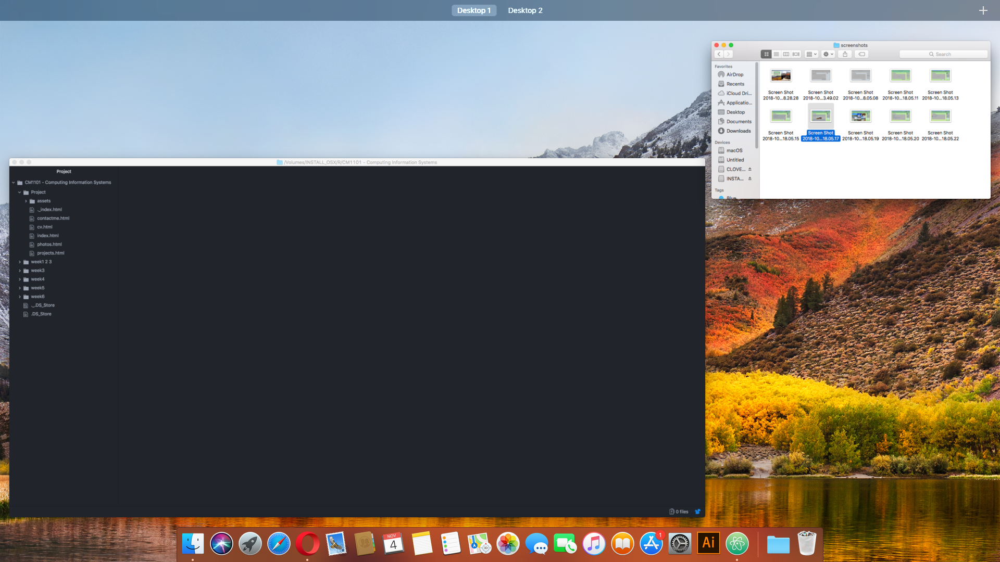

Project Hackintosh
Hello, how’s everyone doing?
So, I’ve been doing a lot of research and found out you can actually install macOS on a non-apple computer! Isn’t that crazy? After many sleepless nights I was able to able it work, not flawlessly yet but I know I’ll get there soon. This is how it looks now:
Although there are some DSDT’s left to install and the config.plist is not yet perfect the operating system is working good enough. This is a great addition to my laptop as being a Digital Media student we have acess to the iMacs on the lab and maybe I’d need to work on some apps that I wouldn’t have access on Windows. And not to talk about that to get a Mac I’d have to spend a lot more money to have the same specs I have on my laptop.
Nevertheless, I’ll be updating you guys on this project and I hope I can finalise it soon enough.
Saturday, 10th October
Rodrigo Miguel